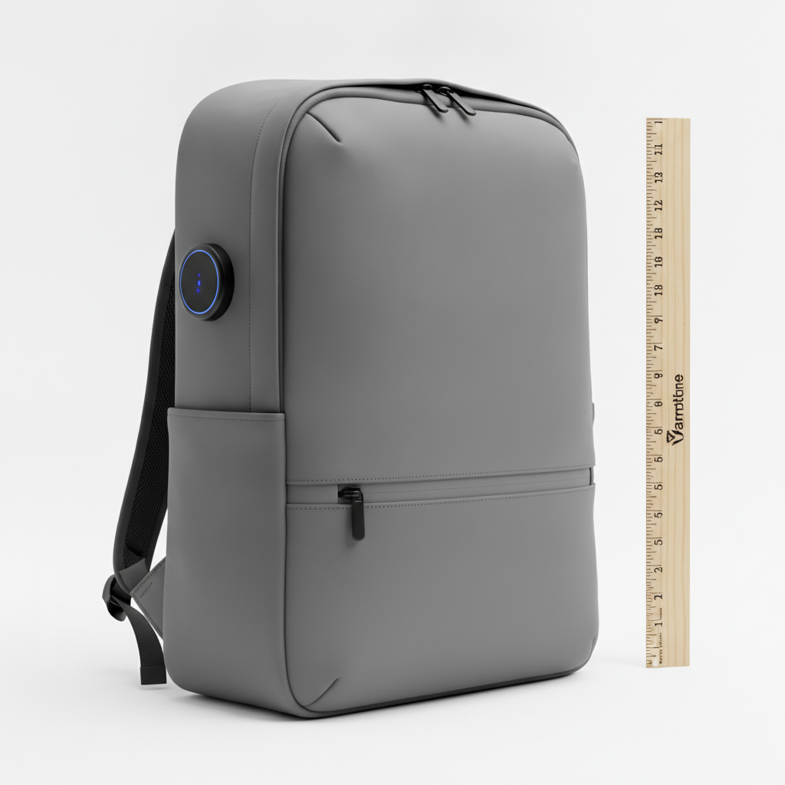
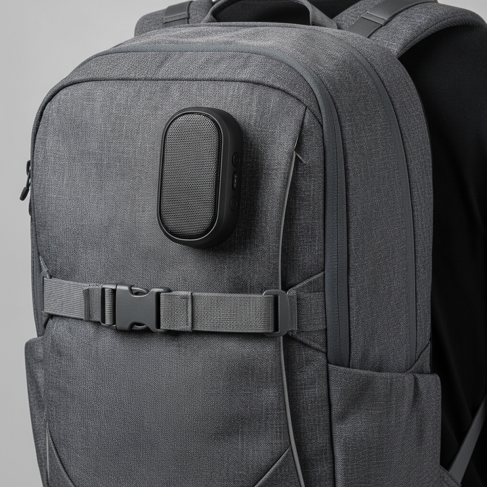
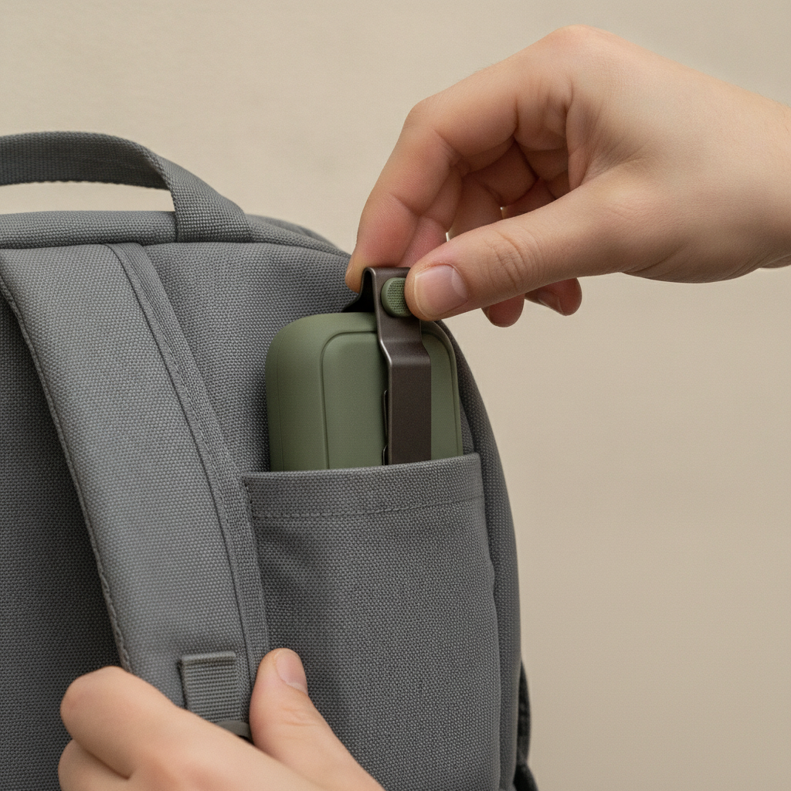
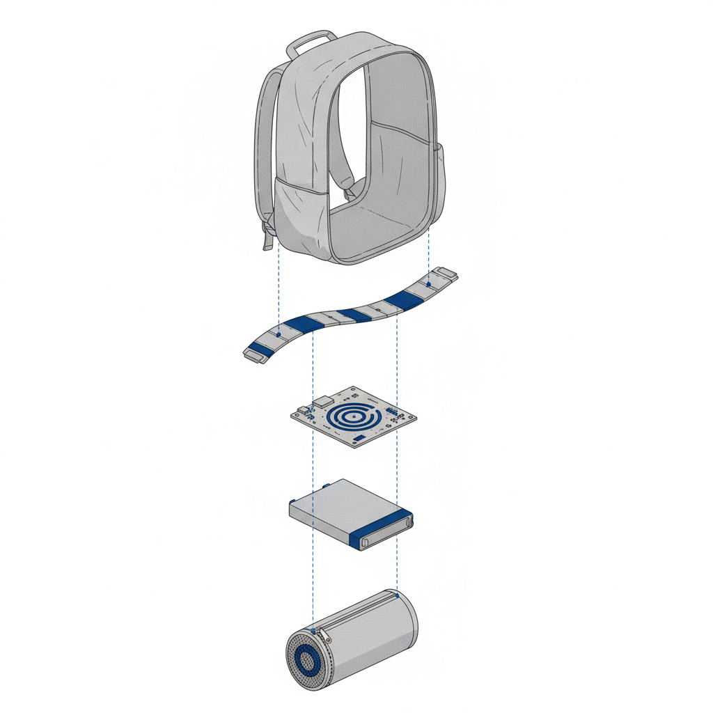
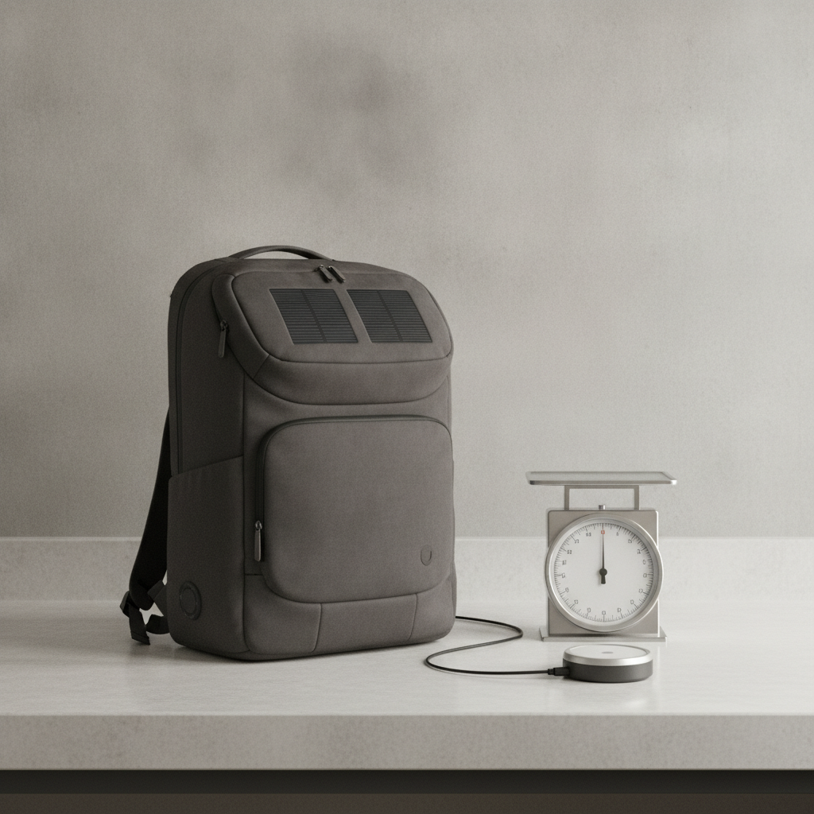

A backpack that watches your load, your route, and the air you're breathing.
Alerts before a heavy load ever becomes a sore shoulder

Empty pack weighs about 1.1kg with the sensor module built in

Worn position — sensor pod sits flat against the shoulder strap

Sensor pod clips in and out in seconds, no tools needed
Weight and air data reach a phone alert in under 3 seconds

Exploded stack — 5 layers: shell, load strip, board, battery, air pod

Checked against a mechanical scale and a handheld air sensor
One battery rail feeds GPS, speaker, and both sensors